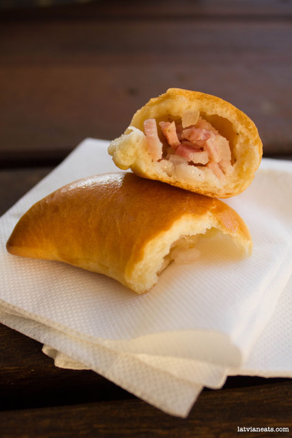

Pīrāgi
Sastāvdaļas:
Mīklai: 1 kg miltu, 200 g sviesta, 30 ml eļļas, 3 ēd. k. cukura, 3 tējk. sāls, 220 ml piena, 220 ml ūdens, 25 g sausā rauga
Pildījumam: 600 g kūpināts cūkas cauraudzis, 2 sīpoli, sāls, pipari


Pagatavošana
180 min
1. Bļodā lej siltu pienu (svaigo raugu vispirms saberž ar nedaudz piena un cukuru) ūdeni, pieber cukuru, sāli. Samaisa.
2. Miltus sajauc ar sauso raugu, pievieno pie iepriekšējā un visu samīca (sākumā pieliek mazāko miltu daudzumu). Tad pieliek taukvielas. Visu kārtīgi mīca kādas 15 minūtes. Ja mīkla pārāk izplūdusi un ķepīga pieliek vēl miltus. Taču mīklai jābūt maigai un viegli jāmīcas. Mīcot tai jākļūst viendabīgai, lai neķeras pie rokām un reizē ir arī staipīga. Pastaipot aiz mīklas gala, tai nevajadzētu uzreiz pārtrūkt.
3. Mīklu pārkaisa ar miltiem vai nosmērē ar eļļu, pārsedz ar plēvi, virsū dvieli un liek siltā vietā raudzēties. Es parasti cepeškrāsnī ieslēdzu spuldzīti un ar to parasti pietiek siltumam. Raudzē apmēram stundu, tad atspaida un raudzē vēl 30 minūtes.
4. Kamēr mīkla rūgst, sīki sagriež speķi, sīpolus, pievieno piparus un sāli pēc vajadzības. Sīpolus var apcept, ja vēlas, bet pirms pildījuma izmantošanas tie noteikti jāatdzesē, lai pārāk nesasildītu mīklu.
5. Uzrūgušo mīklu sadala 3 gabalos. Ņem pa vienam gabalam (pārējo atstāj apsegtu), ar rokām uz miltaina galda izveido taisnstūri, sagriež sloksnēs un katru sloksni sagriež kvadrātos. No katra kvadrāta saveļ apaļu bumbiņu. Bumbiņas kārto zem plēves/dvieļa un raudzē 10-15 minūtes.
6. Katru bumbiņu saplacina kā plāceni, liek vidū pildījumu.
7. Maliņas saspiež ciet un pašu pīrādziņu paņemot aiz galiņiem parullē pa galdu turp šurp, vienlaikus veidojot spicus galus.
8. Uz cepešplāts klāj cepampapīru, kārto pīrādziņus ar vīli uz leju, ja vēlas galus var ieliekt. Pīrādziņiem obligāti jāuzrūgst vēl vienu reizi. Apsegtus jāatstāj uz plāts kādas 20 minūtes.
9. Cepeškrāsni ieslēdz uz 200 grādiem.
10. Pīrāgus rūpīgi apziež ar sakultu olu. Es parasti pievienoju olai vēl kādu ēdamkaroti ūdens. Var uzkaisīt ķimenes vai sezamas sēkliņas.
11. Liek sakarsētā cepeškrāsnī pa vidu un cep 200 grādos 12-15 minūtes. Es parasti tikko izņemtiem karstiem pīrāgiem uzklāju mitru dvielīti un kādu laiku paturu, tas ir garants, ka pīrāgi vienmēr būs mīksti. Īpaši spīdīgu virsiņu dabūsi, ja tūdaļ pēc izņemšanas no krāsns tos nosmērēsi ar augu eļļu.
12. No šī mīklas daudzuma iznāk 3 lielās plāts pīrāgu. Ja sacepts par daudz, var ielikt saldētavā izņemot uzreiz uzsilda cepeškrāsni vai mikrenē. Būs kā tikko cepti.